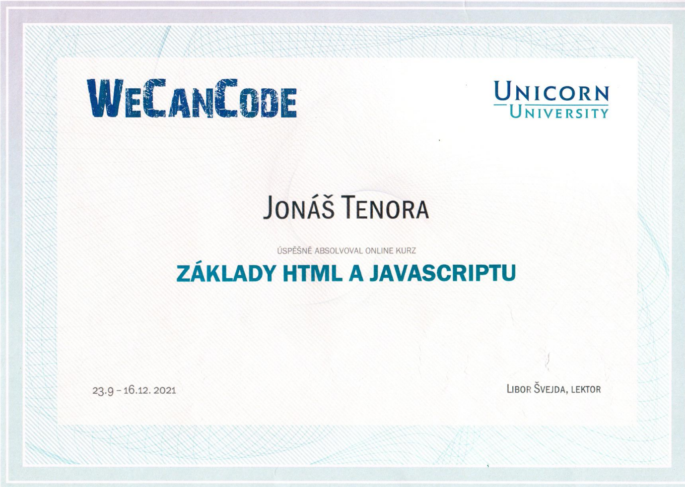
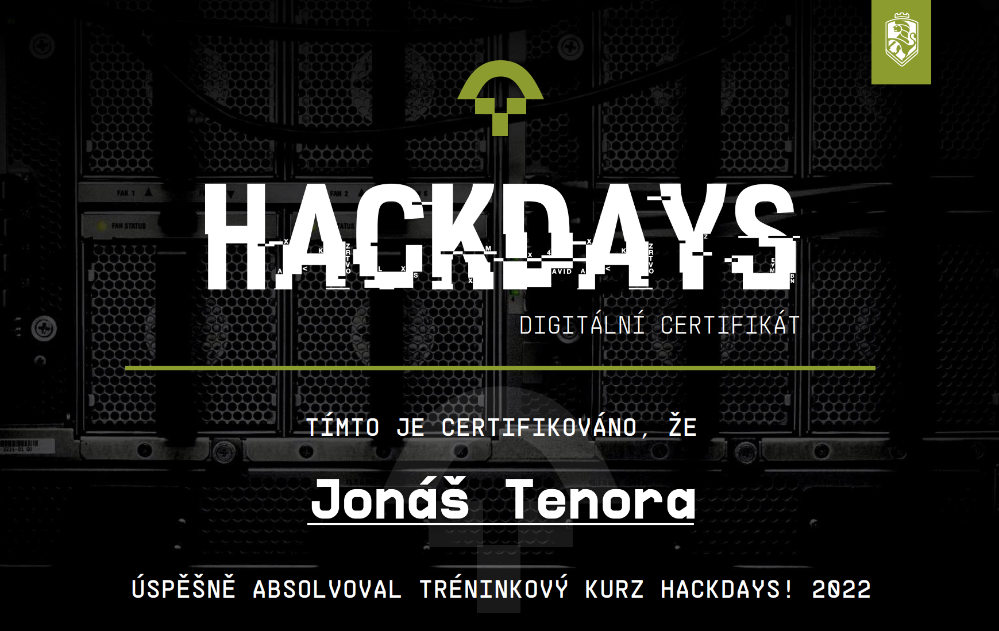
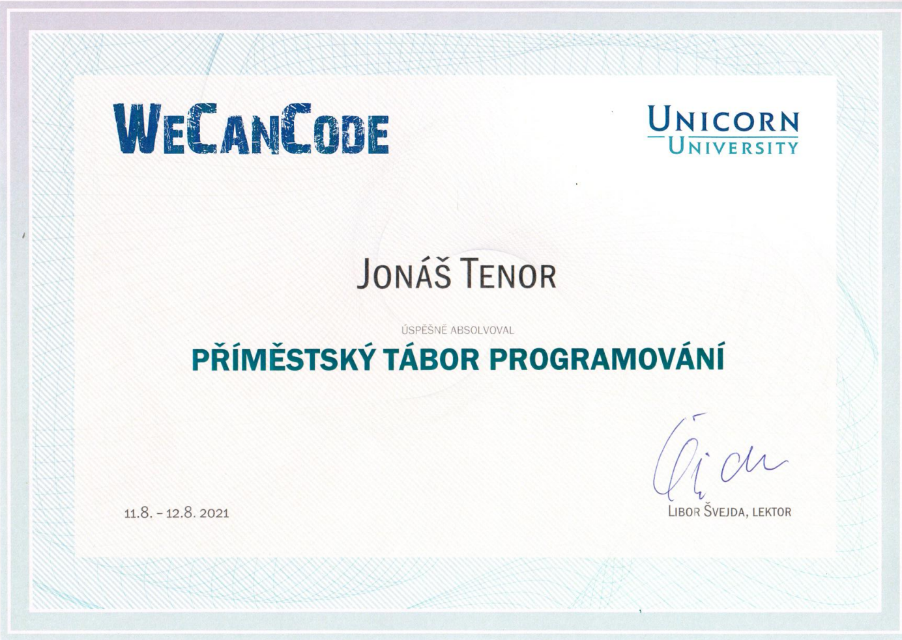

V létě jsem byl na příměstském programovacím táboře IT akademie
WeCanCode a před pár měsíci jsem absolvoval 12ti týdenní kurz
programování HTML a JavaScriptu. Obojí bylo pod záštitou vysoké školy
Unicorn Univerzity v Praze. 12. 2. 2022 jsem se zúčastnil Vámi pořádaného kurzu HackDays,
kde se náš tým umístil na druhém místě.
Ve volném čase se učím stříhat videa a programovat svoji osobní stránku.
Také rád běhám a cvičím.
Již devět let navštěvuji místní oddíl všestrannosti Sokol Komárov a účastním
se Sokolem pořádaných akcí, jako je Pešíkův pochod, Zálesácký závod
zdatnosti, přebory v atletice a plavání a také každoroční Tělocvičné
akademie. Minulý rok to bylo po osmé, co jsem byl na Letním stanovém
táboře ve Lhotě pod Radčem a jsem si jist, že tomu nebylo naposled.
Na začátku 2. stupně základní školy jsem dva roky trénoval v oddíle Spartak
Hořovice moderní pětiboj, především běh, plavání a šerm.
Jako malý jsem navštěvoval po dobu čtyř let Sbor dobrovolných hasičů
Chaloupky. Podařilo se nám získat mnoho trofejí.
Certifikáty:


